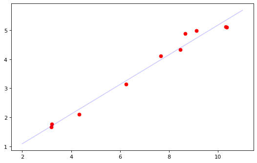

正文
13 相关分析
皮尔逊、斯皮尔曼、肯德尔相关系数介绍及其在特征选择中的应用
协方差
c o v ( X , Y ) = E { [ X − E ( X ) ] [ Y − E ( Y ) ] } = E ( X Y ) − E ( X ) E ( Y ) = σ ( X , Y ) \mathrm{cov} (X,Y)=E\{\left[ X-E(X)\right]\left[Y-E(Y)\right]\}=E(XY)-E(X)E(Y)=\sigma(X,Y)
c o v ( X , Y ) = E { [ X − E ( X ) ] [ Y − E ( Y ) ] } = E ( X Y ) − E ( X ) E ( Y ) = σ ( X , Y )
c o v ( X , Y ) = ρ X Y D ( X ) D ( Y ) \mathrm{cov} (X,Y)=\rho_{XY}\sqrt{D(X)}\sqrt{D(Y)}
c o v ( X , Y ) = ρ X Y √ D ( X ) √ D ( Y )
两个随机变量之间关系
正相关
不相关(相互独立)
负相关
协方差
＞0
=0
<0
D ( X + Y ) = D ( X ) + D ( Y ) + 2 C o v ( X , Y ) D(X+Y)=D(X)+D(Y)+2\mathrm{Cov}(X,Y)
D ( X + Y ) = D ( X ) + D ( Y ) + 2 C o v ( X , Y )
X 与与自己的协方差就是 X 的方差
对于样本数据:
c o v ( X , Y ) = Σ i = 1 n ( X i − X ¯ ) ( Y i − Y ¯ ) n − 1 \mathrm{cov}(X,Y)=\frac{\Sigma^n_{i=1}(X_i-\bar X)(Y_i-\bar Y)}{n-1}
c o v ( X , Y ) = n − 1 Σ i = 1 n ( X i − X ¯ ) ( Y i − Y ¯ )
协方差可以反映 两个变量的关联程度, 但是不好度量
13.2 皮尔森相关系数
皮尔森相关系数是用来度量两个连续型 的随机正态 变量之间的线性 关系的一种随机变量特征量
协方差÷标准差
ρ X Y = c o v ( X , Y ) σ X σ Y = c o v ( X , Y ) D ( X ) D ( Y ) = σ ( X , Y ) σ ( X ) σ ( Y ) \rho_{XY}=\frac{\mathrm{cov}(X,Y)}{\sigma_X\sigma_Y}=\frac{\mathrm{cov}(X,Y)}{\sqrt{D(X)}\sqrt{D(Y)}}=\frac{\sigma(X,Y)}{\sigma(X)\sigma(Y)}
ρ X Y = σ X σ Y c o v ( X , Y ) = √ D ( X ) √ D ( Y ) c o v ( X , Y ) = σ ( X ) σ ( Y ) σ ( X , Y )
− 1 ≤ ρ X Y ≤ 1 -1\le \rho_{XY} \le 1
− 1 ≤ ρ X Y ≤ 1
13.3 相关系数的计算与假设检验
13.3.1 相关系数的计算
1 矩阵中行数据之间的相关系数的计算和列数据之间的相关系数的计算
1 2 3 4 5 6 7 8 9 10 11 12 13 14 import numpy as np10 , 10 , 8 , 9 , 7 ],4 , 5 , 4 , 3 , 3 ],3 , 2 , 1 , 1 , 1 ]])print ("data source" )print (tang)print ("corrcoef between rowdata" ) print (np.corrcoef(tang))print ("corrcoef between columndata" ) print (np.corrcoef(tang, rowvar=0 ))
data source
[[10 10 8 9 7]
[ 4 5 4 3 3]
[ 3 2 1 1 1]]
corrcoef between rowdata
[[1. 0.64168895 0.77174363]
[0.64168895 1. 0.53452248]
[0.77174363 0.53452248 1. ]]
corrcoef between columndata
[[1. 0.9694552 0.9526832 0.9939441 0.97986371]
[0.9694552 1. 0.99813671 0.99053606 0.99890611]
[0.9526832 0.99813671 1. 0.98031562 0.99419163]
[0.9939441 0.99053606 0.98031562 1. 0.99587059]
[0.97986371 0.99890611 0.99419163 0.99587059 1. ]]
如 corrcoef between rowdata[0][1]或 corrcoef between rowdata[1][0]所表示的是数组第 0 行数据[10, 10, 8, 9, 7]和第一行数据[4, 5, 4, 3, 3]的相关系数 0.64168895
一组数据和自身的相关系数为 1
2 理论计算与函数计算之间的比较
1 2 3 4 5 6 7 8 9 import pandas as pdimport numpy as np3.8 , 4 , 5.8 , 8 , 11.3 , 14.4 ,16.5 ,16.2 ,13.8 ,10.8 ,6.7 ,4.7 ],77.7 , 51.2 , 60.1 , 54.1 , 55.4 , 56.8 , 45 , 55.3 , 67.5 , 73.3 , 76.6 , 79.6 ]],range (1 , 13 ),"月平均气温 t/°C" , "降雨量 p/mm" ])"月份"
月份
1
2
3
4
5
6
7
8
9
10
11
12
月平均气温 t/°C
3.8
4.0
5.8
8.0
11.3
14.4
16.5
16.2
13.8
10.8
6.7
4.7
降雨量 p/mm
77.7
51.2
60.1
54.1
55.4
56.8
45.0
55.3
67.5
73.3
76.6
79.6
伦敦市平均气温 t 与降水量 p 之间的相关系数:
r t p = σ ( t , p ) σ ( t ) σ ( p ) = − 4 . 8 9 5 r_{tp}=\frac{\sigma(t,p)}{\sigma(t)\sigma(p)}=-4.895
r t p = σ ( t ) σ ( p ) σ ( t , p ) = − 4 . 8 9 5
array([[ 1. , -0.48949468],
[-0.48949468, 1. ]])
13.3.2 相关系数的显著性检验
10 个学生初一数学分数 X 与初二数学分数 Y 如下表所示, 求它们之间的相关系数, 并从总体角度判断初一和初二数学分数是否存在关联?
1 计算成绩间的相关系数
1 2 3 4 5 6 7 8 9 10 11 import pandas as pdimport numpy as np74 , 71 , 72 , 68 , 76 ,73 ,67 ,70 ,65 ,74 ], 76 , 75 , 71 , 70 , 76 , 79 , 65 , 77 , 62 , 72 ]])0 ], data[0 ].sum ()), np.append(data[1 ], data[1 ].sum ())])list (range (1 , 11 ))"总和" )"X" , "Y" ])"序号"
序号
1
2
3
4
5
6
7
8
9
10
总和
X
74
71
72
68
76
73
67
70
65
74
710
Y
76
75
71
70
76
79
65
77
62
72
723
array([[1. , 0.7802972],
[0.7802972, 1. ]])
得到相关系数: r = 0 . 7 8 0 2 9 7 2 r = 0.7802972 r = 0 . 7 8 0 2 9 7 2
2 构建假设检验确定总体数据 间是否存在关联
根据样本数据提出总体的一个假设
假设H 0 : ρ = 0 , H 1 : ρ ≠ 0 H_0:\rho=0,H_1:\rho\ne0 H 0 : ρ = 0 , H 1 : ρ ≠ 0
对于成对数据的检验, 一般用 t 检验, 构建检验统计量
相关系数的检验
escorc
The Pearson linear correlation coefficient ® for n pairs of independent observations can be tested against the null hypothesis (ie.: >no correlation) using the statistic
t = r*sqrt[ (n-2)/(1-r^2) ]
This statistic has a Student-t distribution with n-2 degrees of freedom.(此统计量具有具有 n-2 个自由度的学生 t 分布)
t = r n − 2 1 − r 2 = 0 . 7 8 0 3 1 0 − 2 1 − 0 . 7 8 0 3 2 = 3 . 5 2 8 9 t=\frac{r\sqrt{n-2}}{\sqrt{1-r^2}}=\frac{0.7803\sqrt{10-2}}{\sqrt{1-0.7803^2}}=3.5289
t = √ 1 − r 2 r √ n − 2 = √ 1 − 0 . 7 8 0 3 2 0 . 7 8 0 3 √ 1 0 − 2 = 3 . 5 2 8 9
t = 3 . 5 2 8 9 > 3 . 3 5 5 4 = t α / 2 ( n ) = t 0 . 0 0 5 ( 8 ) t=3.5289>3.3554=t_{\alpha/2}(n)=t_{0.005}(8)
t = 3 . 5 2 8 9 > 3 . 3 5 5 4 = t α / 2 ( n ) = t 0 . 0 0 5 ( 8 )
在显著水平α = 0 . 0 1 \alpha=0.01 α = 0 . 0 1 t t t ρ ≠ 0 \rho\ne0 ρ ≠ 0
1 2 3 4 5 6 from scipy.stats import t0 ][1 ]10 - 2 ) / np.sqrt(1 - r ** 2 )print ("相关系数: " , t_value, '>' , t.ppf(1 - 0.005 , 8 ))print ("显著性水平: " , 2 * (1 - t.cdf(t_value, 8 )), '<' , "0.01" )
相关系数: 3.52891333162547 > 3.3553873313333957
显著性水平: 0.007744294734007395 < 0.01
1 2 3 4 5 import scipy.stats as stats0 ], tang[1 ])print ("cor =" , cor)print ("pv =" , pv)
cor = 0.7802972005173809
pv = 0.007744294734007256
cor 即为两组数据之间的相关系数
pv 为显著性水平
例 13.4
1 2 3 4 5 6 7 8 9 10 11 12 13 14 15 16 17 18 19 20 21 22 23 24 25 26 27 import numpy as npimport scipy.stats as stats import matplotlib.pyplot as plt10.35 , 6.24 , 3.18 , 8.46 , 3.21 , 7.65 , 4.32 , 8.66 , 9.12 , 10.31 ] 5.1 , 3.15 , 1.67 , 4.33 , 1.76 , 4.11 , 2.11 , 4.88 , 4.99 , 5.12 ] print ('correlation' ,correlation)print ('pvalue' ,pvalue)8 ,5 ), dpi=80 )111 )'red' )2 , 11 , 2 )0.5115 * x + 0.0649 "blue" , alpha=0.2 )
correlation 0.9891763198690562
pvalue 5.926875946481136e-08

13.4 斯皮尔曼等级相关
13.4.1 皮尔森相关系数的局限性
对于非线性关系, 相关性的检测功效会下降
13.4.2 斯皮尔曼等级相关系数
【数据科学】斯皮尔曼的等级相关系数（Spearman’s coefficient）
1 斯皮尔曼等级相关系数的表示
斯皮尔曼等级相关主要用于解决名称数据和顺序数据相关的问题.当两个 变量值以等级次序排列或以等级次序表示时, 两个相应的总体并不一定 呈正态分布, 样本容量也不一定 大于 30, 这种情况下可以用斯皮尔曼等级相关来描述两个变量之间的相关关系.
r s = 1 − 6 Σ d i 2 n 3 − n r_s=1-\frac{6\Sigma d^2_i}{n^3-n}
r s = 1 − n 3 − n 6 Σ d i 2
n n n d d d
无论两个变量的数据如何变化, 符合什么样的分布, 我们只关心每个数值在变量内的排列顺序(秩)
当每个变量是另一个的完美单调函数时，发生+1 或-1 的完美斯皮尔曼相关
数据中出现了有相同等级的数据，一般对于有相同等级的数据的个体用所占有的平均等级作为它们的共同等级，比如有两个数据大小相同，分别占据 5，6 等级，则将 5.5 作为它们的共同等级
3 斯皮尔曼等级相关系数显著性检验
t = r s n − 2 1 − r s 2 t=\frac{r_s\sqrt{n-2}}{\sqrt{1-r^2_s}}
t = √ 1 − r s 2 r s √ n − 2
4 应用 Python 函数库计算斯皮尔曼等级相关系数
1 直接计算斯皮尔曼等级相关系数
1 2 3 4 5 import numpy as npimport scipy.stats as stats10.35 , 6.24 , 3.18 , 8.46 , 3.21 , 7.65 , 4.32 , 8.66 , 9.12 , 10.31 ] 5.1 , 3.15 , 1.67 , 4.33 , 1.76 , 4.11 , 2.11 , 4.88 , 4.99 , 5.12 ]
1 2 3 correlation, pvalue = stats.spearmanr(x, y)print ('correlation:' , correlation)print ('pvalue:' , pvalue)
correlation: 0.9878787878787878
pvalue: 9.307459988955517e-08
2 先将原始数据转换成等级数据, 再计算斯皮尔曼等级相关系数
1 2 3 4 5 6 7 8 9 10 11 12 13 import numpy as npimport scipy.stats as stats10.35 , 6.24 , 3.18 , 8.46 , 3.21 , 7.65 , 4.32 , 8.66 , 9.12 , 10.31 ] 5.1 , 3.15 , 1.67 , 4.33 , 1.76 , 4.11 , 2.11 , 4.88 , 4.99 , 5.12 ] print (x)print (y)print ('correlation:' , correlation)print ('pvalue:' , pvalue)
[10. 4. 1. 6. 2. 5. 3. 7. 8. 9.]
[ 9. 4. 1. 6. 2. 5. 3. 7. 8. 10.]
correlation: 0.9878787878787878
pvalue: 9.307459988955517e-08
用等级数据计算得到的斯皮尔曼相关系数和显著性水平与原始数据计算得到的数据相同
1 2 3 4 5 6 7 8 9 10 11 12 13 14 15 16 17 18 from scipy.stats import timport numpy as npimport scipy.stats as stats10.35 , 6.24 , 3.18 , 8.46 , 3.21 , 7.65 , 4.32 , 8.66 , 9.12 , 10.31 ] 5.1 , 3.15 , 1.67 , 4.33 , 1.76 , 4.11 , 2.11 , 4.88 , 4.99 , 5.12 ] 1 - (6 * ((x - y) ** 2 ).sum ()) / (n ** 3 - n)len (x)1 - (6 * ((x - y) ** 2 ).sum ()) / (n ** 3 - n)2 ) / (1 - r_s ** 2 )2 * (1 - t.cdf(t_value, n - 2 ))print ('correlation:' , correlation)print ('pvalue:' , pvalue)
correlation: 0.9878787878787879
pvalue: 3.419486915845482e-14
13.5 肯德尔系数
描述 K 个评分这对 N 个对象评价的一致性
13.5.3 肯德尔相关系数的显著性检验
1 2 3 4 5 6 7 8 import scipy.stats as stats10 , 9 , 8 , 7 , 6 ]10 , 8 , 9 , 6 , 7 ]print ("tau" , tau)print ("p_value" , p_value)
tau 0.6
p_value 0.23333333333333334
说明等级数据 x1 和 x2 的肯德尔相关系数为 0.6, 其显著性水平约为 0.233, 二者呈现出较弱的一致性
13.6 质 量 相关分析
质 量 相关分析也是研究两个变量之间的相关关系的分析方法, 其中
一个变量描述事物总体的性质 或特点, 如男与女, 优与劣, 及格与不及格等(一般是离散的形式)
另一个变量以数量 形式描述事物的具体性质, 如智商, 学科分数, 身高, 体重等
这两个变量之间的相关关系就是质量相关
13.6.1 二列相关
1 二列相关的数学定义
当两个变量都是正态连续变量, 其中一个变量被人为 地划分成二分变量
R = X p ¯ − X q ¯ σ ∗ p q Y R=\frac{\bar{X_p}-\bar{X_q}}{\sigma}*\frac{pq}{Y}
R = σ X p ¯ − X q ¯ ∗ Y p q
变量
含义
p p p 二分变量中某一类别频率的比率
q q q 二分变量中另一类别频率的比率
X p ¯ \bar{X_p} X p ¯ 二分变量中p p p
X q ¯ \bar{X_q} X q ¯ 二分变量中q q q
σ \sigma σ 连续变量的标准差
Y Y Y 正态曲线中累积概率p p p
Y = 1 2 π e − x 2 2 Y = \frac{1}{\sqrt{2\pi}}e^{-\frac{x^2}{2}}
Y = √ 2 π 1 e − 2 x 2
2 二列相关实例
例 13.10
某次考试中, 有 10 名考生的成绩如下表所示, 包含总分和一道问答题, 试求该道问答题的区分度(该问答题得分与卷面总分的相关度)(人为规定问答题$\ge$6 为通过, 否则为未通过)
1 2 3 4 5 6 7 8 9 import pandas as pdimport numpy as npfrom scipy.stats import norm75 , 57 , 73 , 65 , 67 , 56 , 63 , 61 , 65 , 67 ],7 , 6 , 7 , 4 , 7 , 4 , 4 , 4 , 7 , 6 ]])range (1 , 11 ), index=["卷面总分" , "问答题总分" ])"考生"
考生
1
2
3
4
5
6
7
8
9
10
卷面总分
75
57
73
65
67
56
63
61
65
67
问答题总分
7
6
7
4
7
4
4
4
7
6
由于问答题以 6 分为界进行区分, 由样本数据确定p = 0 . 6 0 , q = 0 . 4 0 p=0.60, q=0.40 p = 0 . 6 0 , q = 0 . 4 0
1 2 3 4 p = np.array(np.where(data[1 ] >= 6 )).size / len (data[1 ])1 ] < 6 )).size / len (data[1 ])print ("p:" , p)print ("q:" , q)
p: 0.6
q: 0.4
当p = 0 . 6 p=0.6 p = 0 . 6 x = 0 . 2 5 x=0.25 x = 0 . 2 5
1 2 x = norm.ppf(p)print ("x:" , x)
x: 0.2533471031357997
当x = 0 . 2 5 x=0.25 x = 0 . 2 5 Y = 1 2 π e − x 2 2 Y = \frac{1}{\sqrt{2\pi}}e^{-\frac{x^2}{2}} Y = √ 2 π 1 e − 2 x 2
得到Y = 0 . 3 8 6 6 Y=0.3866 Y = 0 . 3 8 6 6
1 2 Y = norm.pdf(x)print ("Y:" , Y)
Y: 0.38634253349686054
根据问答题得分分类, 计算卷面总分相应类比的平均数及样本均方差
X p ¯ = 6 7 . 3 3 , X q ¯ = 6 1 . 2 5 , σ = 6 . 1 2 \bar{X_p}=67.33, \bar{X_q}=61.25, \sigma=6.12 X p ¯ = 6 7 . 3 3 , X q ¯ = 6 1 . 2 5 , σ = 6 . 1 2
1 2 3 4 5 6 X_p_bar = data[0 ][np.where(data[1 ] >= 6 )].mean()0 ][np.where(data[1 ] < 6 )].mean()0 ].std(ddof=1 )print ("X_p_bar:" , X_p_bar)print ("X_q_bar:" , X_q_bar)print ("std:" , sigma)
X_p_bar: 67.33333333333333
X_q_bar: 61.25
std: 6.118278625016463
通过公式计算得到二列相关系数
R = X p ¯ − X q ¯ σ ∗ p q Y = 6 7 . 3 3 − 6 1 . 2 5 6 . 1 2 ∗ 0 . 6 ∗ 0 . 4 0 . 3 8 6 6 ≈ 0 . 6 2 R=\frac{\bar{X_p}-\bar{X_q}}{\sigma}*\frac{pq}{Y}=\frac{67.33-61.25}{6.12}*\frac{0.6*0.4}{0.3866}\approx0.62
R = σ X p ¯ − X q ¯ ∗ Y p q = 6 . 1 2 6 7 . 3 3 − 6 1 . 2 5 ∗ 0 . 3 8 6 6 0 . 6 ∗ 0 . 4 ≈ 0 . 6 2
1 2 R = (X_p_bar - X_q_bar) / sigma * p * q / Y
0.617662281919257
从二列相关系数的值, 可以看到问答题得分对总分的区分度略高
13.6.2 点二列相关
质量分析中用来描述事物总体性质的离散变量, 如果其性质本身就具有离散性质 , 而不是人为地将连续变量划分成为连续变量, 这时候的相关关系称为点二列相关.
R = X p ¯ − X q ¯ σ ∗ p q R=\frac{\bar{X_p}-\bar{X_q}}{\sigma}*\sqrt{pq}
R = σ X p ¯ − X q ¯ ∗ √ p q
13.6.3 Python 对点二列相关的支持
1 2 3 4 5 6 7 import scipy.stats as stats1 ,0 ,0 ,0 ,0 ,0 ,0 ,1 ,1 ,1 ,1 ,0 ,1 ,1 ,1 ,1 ,1 ,0 ,0 ,0 ]84 ,82 ,76 ,60 ,72 ,74 ,76 ,84 ,88 ,90 ,78 ,80 ,92 ,94 ,96 ,88 ,90 ,78 ,76 ,74 ]print ('pointbiserialcorrcoef' ,coef)print ('pvalue' ,pvalue)
pointbiserialcorrcoef 0.7849870641173373
pvalue 4.145927973490357e-05
点二列相关系数约为 0.785, 说明两组数据具有较好的一致性
输出的显著性水平的值很小, 表示相关系数具有统计学意义
13.7 品质相关分析
如果两个变量都是用来描述事物的综合性质且都是 划分成几种类别来表示, 则称这两个变量之间的相关关系为品质相关
有两种不同的品质相关: 列连相关和φ \varphi φ
13.7.1 列连相关系数
1 列连相关系数的数学表示
当至少一个变量被分成两个以上类别, 则这两个变量之间的相关程度可用列连相关系数来测度.
假设变量x x x a a a y y y b b b a a a b b b x x x y y y
记m i j m_{ij} m i j x x x i i i ( i = 1 , 2 , . . . , a ) (i=1,2,...,a) ( i = 1 , 2 , . . . , a ) y y y j j j ( j = 1 , 2 , . . . , b ) (j=1, 2, ..., b) ( j = 1 , 2 , . . . , b )
a i = Σ j = 1 b m i j , i = 1 , 2 , . . . , a a_i=\Sigma^b_{j=1}m_{ij},i=1, 2, ..., a
a i = Σ j = 1 b m i j , i = 1 , 2 , . . . , a
b j = Σ j = 1 a m i j , i = 1 , 2 , . . . , b b_j=\Sigma^a_{j=1}m_{ij},i=1, 2, ..., b
b j = Σ j = 1 a m i j , i = 1 , 2 , . . . , b
构造统计量:
χ 2 = N ( Σ Σ m i j 2 a i b j − 1 ) \chi^2=N(\Sigma\Sigma\frac{m^2_{ij}}{a_ib_j}-1)
χ 2 = N ( Σ Σ a i b j m i j 2 − 1 )
其中N = Σ Σ m i j N=\Sigma\Sigma m_{ij} N = Σ Σ m i j C C C
C = χ 2 N + χ 2 C=\sqrt{\frac{\chi^2}{N+\chi^2}}
C = √ N + χ 2 χ 2
对于列连相关, 可以用卡方检验进行总体性质推断, 若卡方检验显著, 则列连相关系数也显著
2 列连相关系数的计算实例
计算调查对象和态度之间的列连相关系数, 并进行显著性检验
调查对象/态度
赞成
不置可否
反对
总计
低年级学生
446
212
319
977
高年级学生
273
193
324
790
教师
262
325
177
764
总计
981
730
820
2531
χ 2 = N ( Σ Σ m i j 2 a i b j − 1 ) ≈ 1 3 0 . 0 2 \chi^2=N(\Sigma\Sigma\frac{m^2 _ {ij}}{a _ ib _ j}-1) \approx130.02 χ 2 = N ( Σ Σ a i b j m i j 2 − 1 ) ≈ 1 3 0 . 0 2
C = χ 2 N + χ 2 = 1 3 0 . 2 2 5 3 1 + 1 3 0 . 2 = 0 . 2 2 1 C=\sqrt{\frac{\chi^2}{N+\chi^2}}=\sqrt{\frac{130.2}{2531+130.2}}=0.221 C = √ N + χ 2 χ 2 = √ 2 5 3 1 + 1 3 0 . 2 1 3 0 . 2 = 0 . 2 2 1
1 2 3 4 5 6 7 8 9 10 11 12 13 14 import numpy as np446 , 212 , 319 ],273 , 193 , 324 ],262 , 325 , 177 ]])sum ()0 for a in range (data.shape[0 ]):for b in range (data.shape[1 ]):2 ) / (data[a].sum () * data.T[b].sum ())1 )print ("chi_square:" , chi_square)print ("C:" , C)
chi_square: 130.0172447754466
C: 0.22104293310887424
1 2 3 from scipy.stats import chi20.01 , 4 )
13.276704135987625
因为χ 2 = 1 3 0 . 0 2 > 1 3 . 2 7 7 \chi^2=130.02>13.277 χ 2 = 1 3 0 . 0 2 > 1 3 . 2 7 7 C = 0 . 2 2 1 C=0.221 C = 0 . 2 2 1
13.7.2 φ \varphi φ
1 φ \varphi φ
当两个变量都是二分变量 , 则这两个变量之间的相关系数称为φ \varphi φ
A 和 B 的 2x2 列连
B 1 B_1 B 1 B 2 B_2 B 2 合计
A_1
a
b
a+b
A_2
c
d
c+d
合计
a+c
b+d
N=a+b+c+d
则 A 和 B 的φ \varphi φ
r φ = a d − b c ( a + b ) ( a + c ) ( b + d ) ( c + d ) r_\varphi=\frac{ad-bc}{\sqrt{(a+b)(a+c)(b+d)(c+d)}}
r φ = √ ( a + b ) ( a + c ) ( b + d ) ( c + d ) a d − b c
χ 2 = N ( a d − b c ) 2 ) ( a + b ) ( a + c ) ( b + d ) ( c + d ) \chi^2=\frac{N(ad-bc)^2)}{(a+b)(a+c)(b+d)(c+d)}
χ 2 = ( a + b ) ( a + c ) ( b + d ) ( c + d ) N ( a d − b c ) 2 )
易证:
r φ = ± χ 2 N r_\varphi=\pm\sqrt{\frac{\chi^2}{N}}
r φ = ± √ N χ 2
(正负号由a d − b c ad-bc a d − b c
2 φ \varphi φ
R/C
肯定
否定
合计
男生
22
88
110
女生
18
42
60
合计
40
130
170
χ 2 = N ( a d − b c ) 2 ) ( a + b ) ( a + c ) ( b + d ) ( c + d ) = 2 . 1 5 7 7 \chi^2=\frac{N(ad-bc)^2)}{(a+b)(a+c)(b+d)(c+d)}=2.1577
χ 2 = ( a + b ) ( a + c ) ( b + d ) ( c + d ) N ( a d − b c ) 2 ) = 2 . 1 5 7 7
∵ a d − b c > 0 \because ad-bc>0
∵ a d − b c > 0
∴ r φ > 0 \therefore r_\varphi>0
∴ r φ > 0
r φ = χ 2 N = 0 . 1 1 2 7 r_\varphi=\sqrt{\frac{\chi^2}{N}}=0.1127
r φ = √ N χ 2 = 0 . 1 1 2 7
χ 2 < χ 0 . 0 5 2 ( 1 ) = 3 . 8 4 \chi^2<\chi^2_{0.05}(1)=3.84
χ 2 < χ 0 . 0 5 2 ( 1 ) = 3 . 8 4
所以求得的φ \varphi φ
13.8 偏相关与复相关
13.8.1 偏相关
在多要素 所构成的系统中, 先不考虑 其他要素的影响, 单独研究两个 要素之间的相互关系的密切程度
1 一阶偏相关系数
控制 3, 计算 1 和 2 的净影响
r 1 2 , 3 = r 1 2 − r 1 3 r 2 3 ( 1 − r 1 3 2 ) ( 1 − r 2 3 2 ) r_{12,3}=\frac{r_{12}-r_{13}r_{23}}{\sqrt{(1-r^2_{13})(1-r^2_{23})}}
r 1 2 , 3 = √ ( 1 − r 1 3 2 ) ( 1 − r 2 3 2 ) r 1 2 − r 1 3 r 2 3
3 组变量共有C 3 2 = 3 C^2_3=3 C 3 2 = 3
2 二阶偏相关系数
r 1 2 , 3 4 = r 1 2 , 3 − r 1 4 , 3 r 2 4 , 3 ( 1 − r 1 4 , 3 2 ) ( 1 − r 2 4 , 3 2 ) r_{12,34}=\frac{r_{12,3}-r_{14,3}r_{24,3}}{\sqrt{(1-r^2_{14,3})(1-r^2_{24,3})}}
r 1 2 , 3 4 = √ ( 1 − r 1 4 , 3 2 ) ( 1 − r 2 4 , 3 2 ) r 1 2 , 3 − r 1 4 , 3 r 2 4 , 3
4 组变量共有C 4 2 = 6 C^2_4=6 C 4 2 = 6
13.8.2 复相关
R y , 1 2 = 1 − ( 1 − r y 1 2 ) ( 1 − r y 2 , 1 2 ) R_{y,12}=\sqrt{1-(1-r^2_{y1})(1-r^2_{y2,1})}
R y , 1 2 = √ 1 − ( 1 − r y 1 2 ) ( 1 − r y 2 , 1 2 )
R y , 1 2 3 = 1 − ( 1 − r y 1 2 ) ( 1 − r y 2 , 1 2 ) ( 1 − r y 3 , 1 2 2 ) R_{y,123}=\sqrt{1-(1-r^2_{y1})(1-r^2_{y2,1})(1-r^2_{y3,12})}
R y , 1 2 3 = √ 1 − ( 1 − r y 1 2 ) ( 1 − r y 2 , 1 2 ) ( 1 − r y 3 , 1 2 2 )
反映几个要素与某一个要素之间的复相关程度, 复相关系数介于 0~1
复相关系数越大, 表明变量之间的相关程度越密切, 复相关系数为 1, 表示完全相关, 为 0, 表示不相关
复相关系数必≥单相关系数的绝对值
复相关系数必≥同一系列数据所求得的偏相关系数的绝对值, 即R 1 , 2 3 ≥ ∣ r 1 2 , 3 ∣ R_{1,23}\ge|r_{12,3}| R 1 , 2 3 ≥ ∣ r 1 2 , 3 ∣